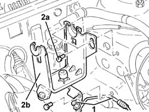
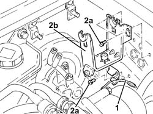
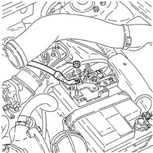
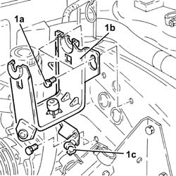

3340A13 abs central mount - r r
- Path
- Procedures > 33 BRAKING SYSTEM > 3340 A(B.S. ANTI-LOCK BRAKING SYSTEM .) > 3340A abs check/adjustment devices > 3340A13 abs central mount - r r
- Kind
- repair procedure (removal / refitting; the operation number is the code)
- Applies to
- all engines; all production periods
- Interactive page
- https://sloeber94.github.io/elrnDB-a147/en/#/3025246
Applies to: engines: 1.6 TS, 2.0 TS; all production periods
 Removing
Removing
 Refitting
RefittingPosition the vehicle on the ramp.
Proceed with removal 5530B10 battery - r+r .
Proceed with removal 5530B52 Battery DRIP TRAY/SUPPORT - R.R. .
Proceed with removal 4450B10 Front WHEEL (one) - R.R. .
Proceed with removal 3340A12 A'B.S. system. - electronic and hydraulic CONTROL UNIT R.R. .
1. Release the supply pipe from the clutch master cylinder from the attachment on the ABS control unit mounting.
2. Undo the bolts (2a) and remove the ABS control unit mounting (2b).

Applies to: engines: 1.6 TS, 2.0 TS; all production periods
Refitting
RemovingPlace the A.B.S. control unit mounting back in its housing and secure it using the bolts.
Secure the supply pipe from the clutch master cylinder with the attachment on the ABS control unit mounting.
Proceed with refitting 3340A12 A'B.S. system. - electronic and hydraulic CONTROL UNIT R.R. .
Proceed with refitting 5530B52 Battery DRIP TRAY/SUPPORT - R.R. .
Proceed with refitting 5530B10 battery - r+r .
Bleed the air from the hydraulic braking system 3330A14 HYDRAULIC BRAKING SYSTEM - Bleed air .
Proceed with refitting 4450B10 Front WHEEL (one) - R.R. .
Remove the car from the ramps.
Applies to: engines: 3.2 V6; all production periods
Removing
RefittingPosition the vehicle on the ramp.
Proceed with removal 5530B10 battery - r+r .
Proceed with removal 5530B52 Battery DRIP TRAY/SUPPORT - R.R. .
Proceed with removal 4450B02 left front wheel r r .
Proceed with removal 3330C30 brake fluid reservoir - r + r and wash inside .
Proceed with removal 3340A12 A'B.S. system. - electronic and hydraulic CONTROL UNIT R.R. .
1. Release the clutch hydraulic system vibration damper from the attachment on the A.B.S. control unit mounting.
2. Undo the bolts (2a) and remove the ABS control unit mounting (2b).

Applies to: engines: 3.2 V6; all production periods
Refitting
RemovingPlace the A.B.S. control unit mounting back in its housing and secure it using the bolts.
Secure the clutch hydraulic system vibration damper with the attachment on the A.B.S. control unit mounting.
Proceed with refitting 3340A12 A'B.S. system. - electronic and hydraulic CONTROL UNIT R.R. .
Proceed with refitting 3330C30 brake fluid reservoir - r + r and wash inside .
Proceed with refitting 5530B52 Battery DRIP TRAY/SUPPORT - R.R. .
Proceed with refitting 5530B10 battery - r+r .
Top up the brake/clutch fluid level 0010T64 brake and or clutch fluid check level and top up as necessary .
Bleed the air from the hydraulic braking system 3330A14 HYDRAULIC BRAKING SYSTEM - Bleed air .
Proceed with refitting 4450B02 left front wheel r r .
Remove the car from the ramps.
Applies to: engines: 1.9 JTD 8V, 1.9 JTD 16V; all production periods
Removing
RefittingPosition the vehicle on the ramp.
Proceed with removal 5530B10 battery - r+r .

Applies to: engines: 1.9 JTD 8V, 1.9 JTD 16V; all production periods
Proceed with removal 4450B02 left front wheel r r .
Proceed with removal 3340A12 A'B.S. system. - electronic and hydraulic CONTROL UNIT R.R. .
1. Undo the bolts (1a) and remove the support for the A.B.S. control unit (1b) after having released the clutch system pipe from the band (1c).

Applies to: engines: 1.9 JTD 8V, 1.9 JTD 16V; all production periods
Refitting
RemovingSecure the clutch system pipe to the band, then place the support for the A.B.S. control unit back in its housing and secure it using the bolts.
Proceed with refitting 3340A12 A'B.S. system. - electronic and hydraulic CONTROL UNIT R.R. .
Proceed with refitting 5530B10 battery - r+r .
Bleed the air from the hydraulic braking system 0010T65 hydraulic brake system bleed air .
Proceed with refitting 4450B02 left front wheel r r .
Remove the car from the ramps.
Topics linked from this page (9)
- 0010T64 brake and or clutch fluid check level and top up as necessary
- 0010T65 hydraulic brake system bleed air
- 3330A14 HYDRAULIC BRAKING SYSTEM - Bleed air
- 3330C30 brake fluid reservoir - r + r and wash inside
- 3340A12 A'B.S. system. - electronic and hydraulic CONTROL UNIT R.R.
- 4450B02 left front wheel r r
- 4450B10 Front WHEEL (one) - R.R.
- 5530B10 battery - r+r
- 5530B52 Battery DRIP TRAY/SUPPORT - R.R.